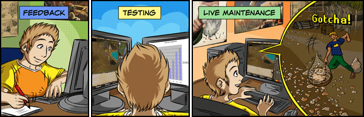

")
Quality Assurance

Quality Assurance
In this month's Development Diary we're taking a look at the Quality Assurance (QA) team, who test the game/website to iron out the kinks and uncover any bugs. The role of QA in RuneScape's development is a little bit different from the norm of the videogame industry. This is due to how regularly RuneScape is updated, which proves to be an ongoing challenge for everyone involved.
Input, input
"At Jagex, the QA team has more of an opportunity to influence the product. One of the luxuries we have is that QA and developers can work so closely together."
 Mod LewisG
Mod LewisG
QA
To maintain the frequency of our releases, the development of new content needs to be as efficient as possible. One of the ways in which this is achieved is by involving all of the development teams at a project's briefing stage, before any coding begins. QA give feedback at this stage to help identify anything that could cause problems later in the project's development.
Mod LewisG, Head of QA, says, "At Jagex, the QA team has more of an opportunity to influence the product. One of the luxuries we have is that QA and developers can work so closely together." This sort of QA/Content relationship is certainly not typical for the games industry – the majority of testers working in the games industry only get involved with a product when it's nearing the latter stages of development.
It just so happens that this feedback stage is enjoyable and it gives the tester an opportunity to put their own creative stamp on a project. This is very rare for such a position in the rest of the games industry, but as you'll see later, there's a very specific reason why it makes perfect sense for RuneScape.

All of the teams at Jagex have their own logo - this being QA's current one.
Work, rest and play
After everyone's feedback has been given, the project brief is tweaked accordingly and is then developed. After development is complete, the second stage begins - that is, the actual testing of the content, which is where the bulk of work lies. People tend to have the perception that games-testing is just playing around...", says Mod Martin, to which Mod Ben L follows up with, "...and that it's easy!" This is summed up by Mod LewisG: "Imagine: if you're testing a racing game, you're not just completing laps all day. You're trying to drive the car outside of the track or crash it into things to see if the game breaks."
There is an element of playing for fun, though, as Mod Martin continues, "During initial testing, you have to assume the mindset of a normal player, playing through as they would." Doing this helps us to make sure the content is, first and foremost, actually fun to play, but it's just the first step of the testing phase. For the rest of testing, QA take a very systematic approach, using checklists for specific aspects of each piece of content.
Particularly for larger content, testing can also be disjointed, as you might only be assigned to test a portion of it, not the whole thing. Taking a quest boss NPC as an example: you'd have to check that it animates properly; its sound effects are correct; that it doesn't get stuck on walls; that it fights as intended; and so on. These things would need to be checked in various circumstances, over and over. If another member of QA was testing the rest of the quest, the boss might be all you see of it.


This colourful image is of the Map Differential tool, which highlights the differences between a map square in the live game and whatever new content we're working on.
If we've dispelled the myth that QA is all fun and games, we also have to do the same for those who say games-testing is a laborious and mindless task. Mod LewisG says, "For someone to work as a games-tester, they can't just be robots that follow a checklist, they have to challenge our testing techniques so we can continually improve upon them." Mod Martin adds: "When things have been systematically tested, they also have to be tested randomly. It's important for testers to be creative and imaginative, to think outside the box, always thinking 'I wonder what would happen if I did this...'"
Even with such a thorough testing process, when you put some content out to millions of players, then at least one of them will do something with it that you couldn't ever predict – perhaps fighting the Kalphite Queen, using a rubber chicken, while spam-clicking the Dance emote button. There are also certain things that we can't fully know before release - e.g. server load problems.
Our past experiences help us to fix the vast majority of such problems before our players see the content, but feedback from players is an important part of the process, especially when you consider there are roughly 250,000 players to every 1 member of QA. Even though you all play the game for fun, you're effectively also games-testers as well!
It's a bug hunt
After content has been thoroughly tested and signed off by QA, Web Content and Translation, the content is deemed complete. This can occur anywhere between one and eight weeks before the scheduled release date. Then, in the week leading up to the release of a piece of new content, we copy all its assets (code, graphics, audio) into a kind of staging area.
This staging area is a version of RuneScape exactly the same as the live game everyone plays, but with the new content added to it – this then allows for the next step of testing: double-checking the release in an environment that mimics what will happen on release day. As we release new content almost every week, we typically only have one week to do this final testing, which explains why some of our larger releases come out on a Tuesday or Wednesday, as they take that little bit longer to check again before they are released.
This all leads us to the third and final QA stage: live maintenance. Once content has been released, there is no need to test it in full again - it already has been at least twice and players will inform us if anything has slipped through the net. From here on, QA's job is more to do with tracking how players receive the content – reading the forums, checking any bugs that players send in through the bug tracker and generally just making sure everything has gone smoothly. This means that if anything does go wrong, we can work on fixing it right away, to get the bug removed as quickly as possible.

This is an image of the bug tracker in use, with player-reported bugs broken down by category (quests, etc.) and Class (A-D).
Class A bugs are game-breaking; Class B bugs are serious, but not game-breaking; Class C bugs are typically typos; Class D bugs are confusing games aspects.
Mod Martin finishes off with the rewards of game-testing: "It's always good feeding back ideas and seeing a piece of content come to fruition. Also, during testing, when you try a really obscure set of steps to discover a bug and it pays off, there's a great deal of satisfaction. Seeing a piece of content shape up is good, but seeing millions of our players enjoying it as well...that's even better."
Years of gaming experience
Aside from having common sense, a methodical approach and a creative streak, one of the most important traits a tester can have is a good knowledge of games. Mod Ben L says, "People who play games a lot generally know what works well in a game, what is fun to play, etc. You know what you like." This is doubly true when you end up testing a game that you also play. It's no secret that some Jagex staff play RuneScape in their spare time, on regular, non-moderator accounts – some of them were playing RuneScape long before they even thought of applying for a job at Jagex.
"Some might think that playing through content before it's finished, before it comes out, would spoil your enjoyment. For me, this isn't the case."
Mod Chris L
QA
QA team member Mod Chris L is the highest ranked player who works at Jagex, placed in the top 500 on the Hiscores, and he says, "I created my account back in the days of RuneScape Classic. Having played through most of the game since then, the experience I've gained helps me to give useful feedback from a player's perspective and support other QA members with my knowledge of the game."
There are plenty of others like Mod Chris L - working in Customer Support, RuneScape Content, balancing, etc. - but those of the QA team have the added benefit of being among the first to play new content, aside from the actual developer. "Some might think that playing through content before it's finished, before it comes out, would spoil your enjoyment. For me, this isn't the case. As my regular character has no special advantages, it's still a challenge playing through new content with it," Mod Chris L continues.
Mod Chris L didn't join Jagex as a member of QA; he spent his university placement year here, first working in Customer Support, then on the fledgling Web Content team. Mod Ben L says,"We take on a lot of industrial placements each year, who generally start off in Customer Support, and we're earning a name for ourselves as a good company to work for."
Indeed, QA and Customer Support teams are great places for many to start a career within the games industry, both at Jagex and the videogames industry as a whole. Perhaps, one day, some of you might end up working on Jagex's QA team...

More articles in
Development Diaries
|
|